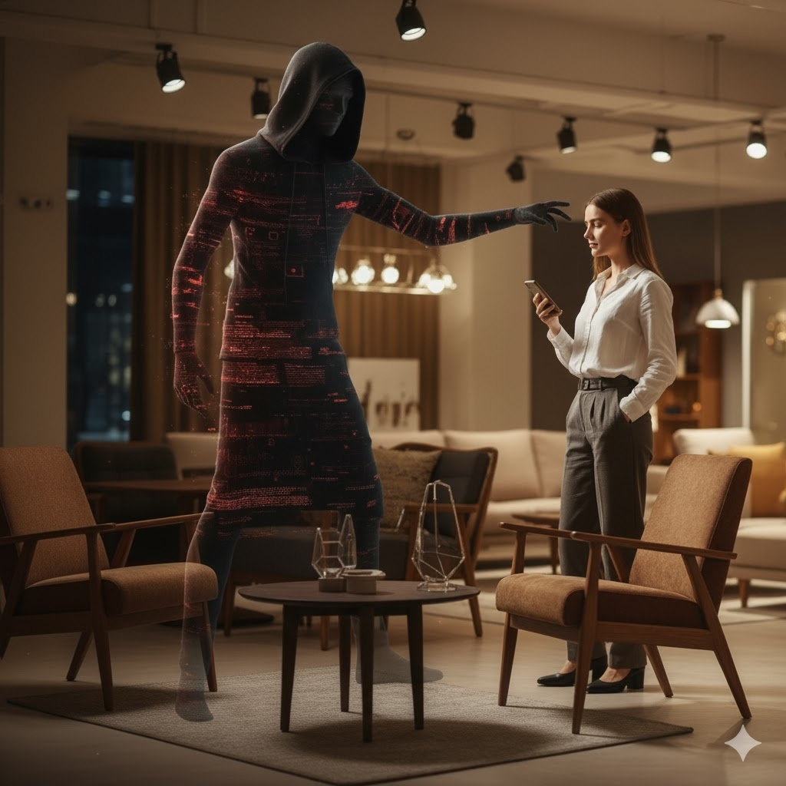

В мебельном бизнесе мы, казалось бы, одержимы цифрами: стоимость закупки, маржинальность, конверсия, скорость оборачиваемости склада, количество проектов. Мы внедряем CRM, ERP, аналитику трафика. Это мышление Даниэля Канемана о быстрых и медленных решениях стало нашей ежедневной реальностью (смотри мою статью об этом мышлении). Мы стремимся принимать решения быстрее, получать данные дешевле, оптимизировать каждый квадратный метр.
Но в этой гонке за эффективностью, в каждом стремлении "посчитать", мы рискуем впустить в наш красивый, тактильный мир мебели того самого "зловещего гостя", о котором предупреждал философ Мартин Хайдеггер, — бездумность.
Бездумность — зловещий гость, которого встретишь повсюду в сегодняшнем мире, поскольку сегодня познание всего и вся доступно так быстро и дешево, что в следующее мгновение — полученное так же поспешно и забывается.(Мартин Хайдеггер, «Отрешённость»)

Сегодняшний человек, по словам Хайдеггера, "спасается бегством от мышления". Он постоянно планирует, исследует, оптимизирует, просчитывает логистику и цены. Но это лишь один, очень специфический вид мыслительной деятельности. Философ разделяет мышление на два типа, и это разделение критически важно для любого бизнес-решения – от выбора поставщика ДСП до дизайна нового шоурума.
Два типа мышления: Калькулятор против Компаса вдохновения
По Хайдеггеру, наш разум может работать в двух совершенно разных режимах.
1. Вычисляющее мышление (Режим "Калькулятор")
Это мышление, которое планирует и исследует. Оно всегда считается с данными, рассчитывает на определённые результаты и постоянно ищет новые, более выгодные возможности: оптимизацию закупок, снижение издержек, максимальную площадь выкладки.
Такое мышление будет калькуляцией даже тогда, когда оно не оперирует цифрами и не пользуется калькулятором или компьютером. Вычисляющее мышление "загоняет" одну возможность за другой. Оно не может успокоиться и одуматься, прийти в себя.
Это незаменимый инструмент для мебельного бизнеса. Без него не составить смету на кухню, не рассчитать логистику, не спрогнозировать продажи диванов. Это мышление отвечает на вопрос "Как?": как увеличить прибыль, как сократить срок производства, как достичь плана продаж.
2. Осмысляющее раздумье (Режим "Компас вдохновения")
Это мышление, которое не гонится за результатом, а ищет смысл. Оно не считает, а созерцает. Оно не торопится, а "умеет ждать, как ждет крестьянин, взойдет ли семя, даст ли урожай". Оно думает о том, что делает мебель не просто набором досок, а частью чьей-то жизни.
Это мышление отвечает на вопрос "Зачем?": зачем клиенту именно этот шкаф, какой смысл в нашем дизайне для его дома, какую атмосферу создает наш салон, что чувствует покупатель, прикасаясь к нашим материалам?
Хайдеггер утверждает, что современный мир почти полностью живёт в режиме "Калькулятора", спасаясь бегством от "Компаса вдохновения", потому что осмысление требует усилий, времени и терпения.
Мебельные решения на практике: где красота, а где просто цифра?
Как это выглядит в вашем мебельном мире? Подавляющее большинство решений и проектов реализуются исключительно в режиме вычисляющего мышления.
Если проанализировать отчёты о продажах, планы закупок и маркетинговые стратегии, мы увидим одну и ту же картину:
- Фокус на метриках: ROI с рекламы, сроки поставки, оборачиваемость моделей, средний чек.
- Оценка "сверху": Руководство смотрит на цифры и конверсии.
- Трудности как издержки: Сбой в поставке ЛДСП — это просто "просрочка", а не разрушенные мечты клиента.
В этом потоке "вычисляющей" информации часто полностью отсутствует осмысление. Никто не говорит об эстетике решения: не только самого продукта, но и всего опыта покупки. О том, насколько "красиво" и интуитивно устроен ваш шоурум, насколько "элегантен" процесс выбора, насколько "душевно" общается ваш менеджер. И почти никогда не слышно голоса конечных пользователей - тех, кто будет жить с вашей мебелью.
Когда продавец становится художником: в поисках "урожая" от каждого клиента
Настало время осмысляющего раздумья. Продавец в салоне - это не просто человек, который оформляет заказ. Чтобы клиент по-настоящему влюбился в вашу мебель, продавец должен осмыслить проект как "факт биографии" клиента.
Это происходит, когда работа над мебельным проектом даёт возможность задуматься о двух вещах:
- Об эстетике решения: Насколько клиент чувствует удобство и красоту вашего решения? Насколько оно гармонично вписывается в его мечты о доме? Работа с вашим продуктом и сервисом приносит удовлетворение или раздражение?
- О своей роли в выращивании "урожая": Видит ли продавец, как его внимание к деталям, его консультация влияют на общий результат — счастье клиента? Даёт ли это ему перспективы для профессионального роста и удовлетворения от работы?
Именно это ожидание "урожая" по Хайдеггеру сильно коррелирует с идеей "послесвадебной" жизни проекта по М. Доану. В мебельном бизнесе это означает, что довольный клиент не просто купил, а стал лояльным "садоводом", который возвращается за новыми "плодами" или рекомендует вас. Неслучайно Доан говорит о "зрелом" проекте и "зрелой" компании. Я бы добавил к этому — зрелый продавец, зрелый дизайнер, зрелый поставщик. Это те, кто не просто выполняет операции, а осмысляет свою роль и видит плоды своего труда в довольных клиентах и красивых интерьерах.
Вывод
Чисто "вычисляющий" подход в мебельном бизнесе может создать склад, полный товара, но опустошить салон от клиентов. Он может дать хорошую цену, но лишить продукт души. Настоящий успех, "зрелость" и долгосрочная любовь клиентов к вашему бренду рождаются только тогда, когда вы находите баланс между вычисляющим мышлением (эффективность, цифры) и осмысляющим раздумьем (красота, смысл, эмоции).
Спросите себя: ваш следующий дизайн-проект или новый шоурум будет просто считать метры и прибыль, или он будет по-настоящему мыслить, вдохновлять и создавать смыслы?
Связаться с автором можно, написав ему в Телеграм.
P.S. Это третья статья из серии статей "Натягивание совы на комод", почему так называется эта серия - написано в статье "Какой город ты строишь, мебельщик?"
P.P.S.Тест мой, картинки - ИИ.